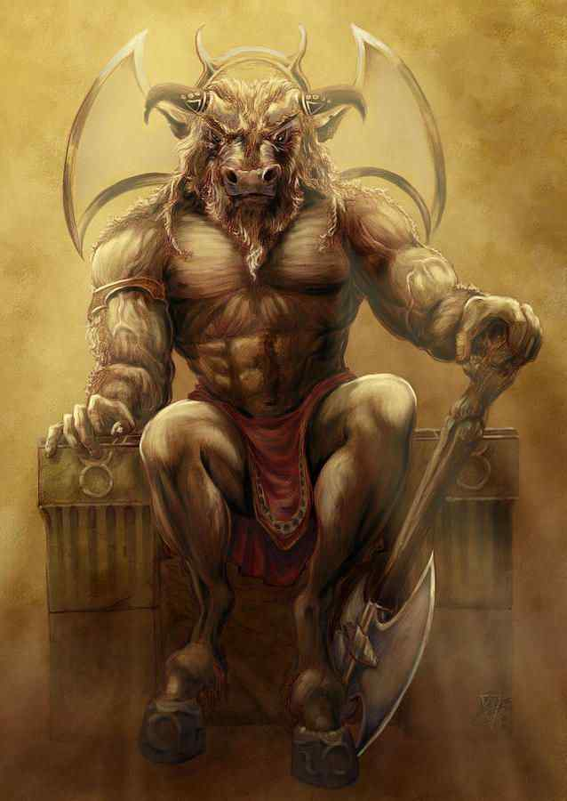
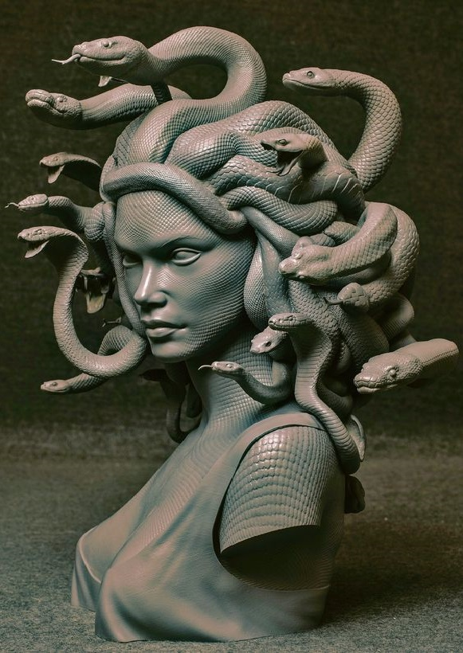
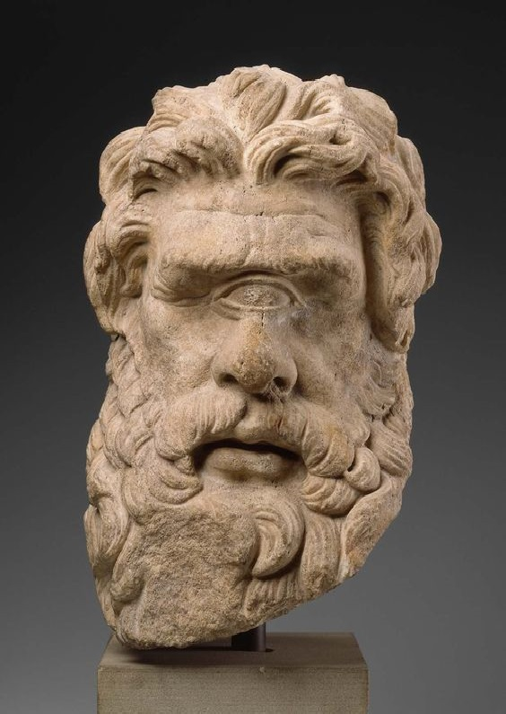
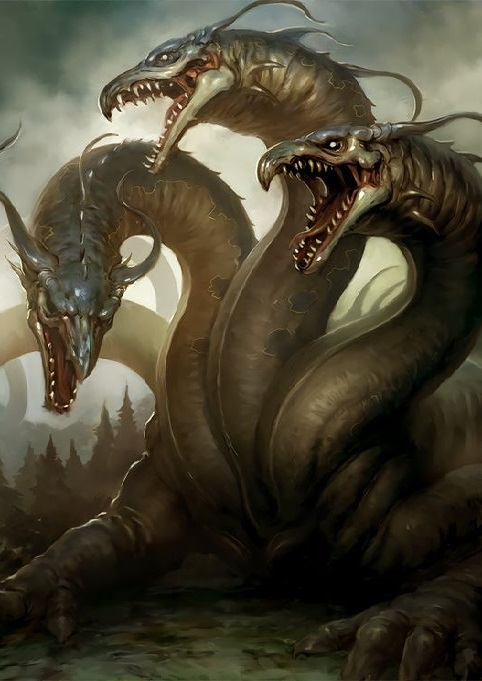
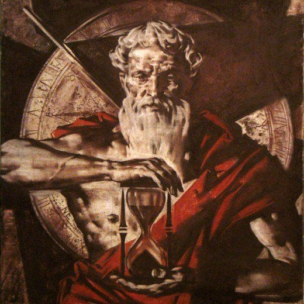
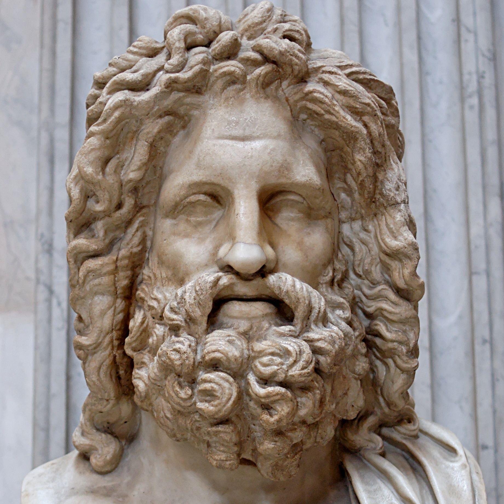
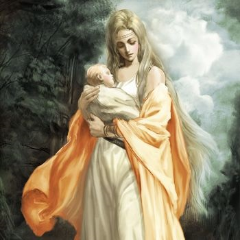
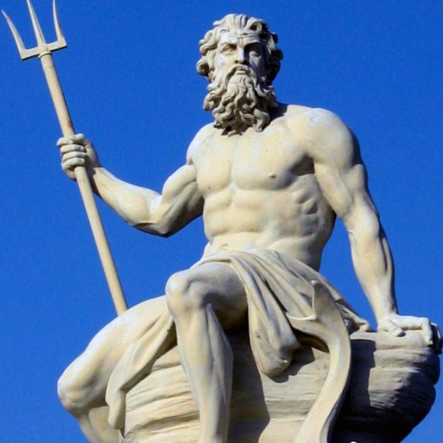
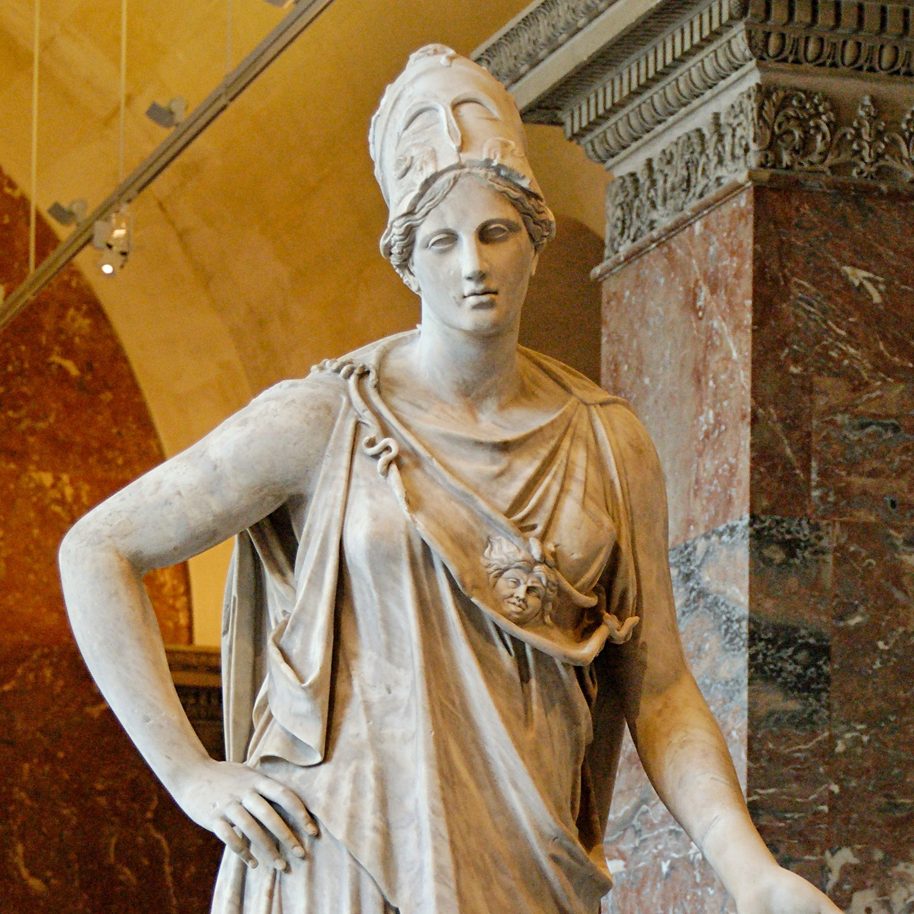
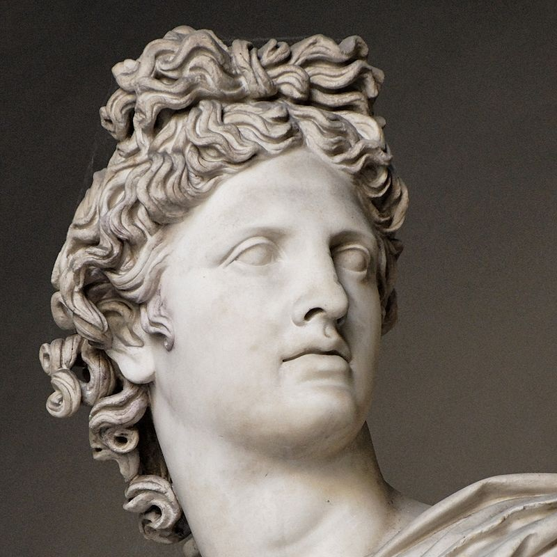

În mitologia greacă, nu există un singur text original, cum ar fi Biblia creștină sau Vedele hinduse, care să prezinte toate personajele și poveștile miturilor. În schimb, primele mituri grecești au făcut parte dintr-o tradiție orală care a început în epoca bronzului, iar comploturile și temele lor s-au desfășurat treptat în literatura scrisă a perioadelor arhaice și clasice. De exemplu, poetul Homer din secolul al VIII-lea î.Hr. ilustrează Iliada și Odiseea, de exemplu, povestea războiului troian ca un conflict divin, precum și unul uman. Cu toate acestea, nu se obosesc să introducă zeii și zeițele care sunt personajele lor principale, deoarece cititorii și ascultătorii ar fi fost deja familiarizați cu ei.
| 
MINOTAUR Minotaurul era o creatură fabuloasă jumătate om și jumătate taur. El locuia în marele Labirint construit de către arhitectul Dedal la porunca regelui cretan Minos. Cuvântul "Minotaur" este traducerea grecească a sintagmei "Taurul lui Minos". Această creatură era cunoscută și sub denumirea Asterius sau Asterion, nume pe care l-a purtat și tatăl vitreg a lui Minos. |

MEDUSA Medusa a fost o ființă mitologică, descrisă ca fiind o femeie hidoasă, care are șerpi în loc de păr. Totodată, aspectul ei monstruos este însoțit de o abilitate de a pietrifica pe oricine o privește direct în ochi. Majoritatea surselor o descriu ca fiind fiica lui Phorcys și Ceto, cu toate că autorul Hyginus (Fabulae Preface) consideră că Medusa este fiica lui Gorgon și Ceto. Medusa a fost ucisă de eroul Perseus cu ajutorul Atenei și al lui Hermes. A ucis-o tăindu-i capul, iar abilitățile de pietrificare s-au conservat |
| 
CICLOP Polifem, este un ciclop, personaj al mitologiei grecești, fiul lui Poseidon și al Thoosei. Polifem are un rol important în Odiseea lui Homer: i-a atras pe camarazii lui Ulise într-o peșteră și a devorat pe șase dintre ei. Printr-o stratagemă, Ulise l-a orbit și împreună cu cei rămași în viață și-a reluat drumul pe mare. Ciclopul a cerut ajutor lui Poseidon și acesta i-a vânat pe ahei pe mare, stârnind furtuni puternice, din care totuși Ulise a scăpat cu bine. |

HIDRA Hidra era un șarpe monstruos din Lerna, avându-i ca părinți pe Typhon și Echidna. Ea avea mai multe capete în locul cărora creșteau altele dacă erau tăiate. Hidra a fost ucisă de Hercule, care și-a otrăvit săgețile cu sângele ei. |
„Mituri de origine” sau „mituri ale creației” reprezintă o încercare de a explica începuturile universului în limbajul uman. Cea mai acceptată versiune la acea vreme, deși o relatare filosofică a începutului lucrurilor, este raportată de Hesiod, în Teogonia sa. Începe cu Haos, un neant căscat. Din vid au ieșit Gaia (Pământul) și alte ființe divine primare: Eros (Dragostea), Abisul (Tartarul) și Erebus. Fără asistență masculină, Gaia l-a născut pe Uranus (Cerul), care apoi a fertilizat-o. Din acea unire s-au născut mai întâi titanii - șase masculi: Coeus, Crius, Cronus, Hyperion, Iapetus și Oceanus; și șase femele: Mnemosyne, Phoebe, Rhea, Theia, Themis și Tethys.
Conform mitologiei din epoca clasică, după răsturnarea titanilor, noul panteon al zeilor și zeițelor a fost confirmat. Printre principalii zei greci s-au numărat olimpicii, care locuiau pe Muntele Olimp sub ochiul lui Zeus. În afară de olimpici, grecii s-au închinat la diferiți zei ai țării. Zeii mitologiei grecești sunt descriși ca având corpuri esențial corporale, dar ideale. Potrivit lui Walter Burkert, caracteristica definitorie a antropomorfismului grecesc este că „zeii greci sunt persoane, nu abstracții, idei sau concepte”. Indiferent de formele lor de bază, zeii antici greci au multe abilități fantastice; cel mai semnificativ, zeii nu sunt afectați de boli și pot fi răniți numai în circumstanțe extrem de neobișnuite. Grecii considerau nemurirea ca fiind caracteristica distinctivă a zeilor lor; această nemurire, precum și tinerețea care nu se decolora, erau asigurate de utilizarea constantă a nectarului și a ambroziei, prin care sângele divin era reînnoit în venele lor.
| 
Cronos, fiul lui Uranus și al Gaiei, este cel mai tânăr dintre cei 12 Titani. Soția sa Rhea s-a numărat tot printre titani. Copiii lor au fost Demetra, Hestia, Hera, Hades, Poseidon și Zeus. Este scris că Uranus, care, într-o versiune, și-a ascuns copiii în măruntaiele pământului (Tartar) pentru că se îngrozea la vederea lor, era în realitate înfricoșat de puterea uriașă a lor. |

Zeuz, Regele zeilor și stăpânul Muntelui Olimp; zeul cerului și al tunetului. Simbolurile sale sunt fulgerele, vulturul, stejarul, sceptrul și balanța. A avut nenumărate aventuri soldate cu copii. |

Rhea (greaca veche:Ρέα) s-a căsătorit cu titanul Cronos și a avut șase copii: Demetra, Hades, Hera, Hestia, Poseidon și Zeus. Deoarece Cronos își mânca copiii, ea a hotărât să-l salveze pe cel din urmă. Astfel, Zeus a fost singurul care a scăpat de mânia tatălui său și cel care l-a și detronat ulterior. |
| 
Poseidon, Stăpânul mărilor, cutremurelor și cailor. Simbolurile includ calul, boul, delfinul, și tridentul. Ca și fratele său mai mic Zeus, Poseidon a avut mai multe aventuri. |

Athena, Zeiță virgină a înțelepciunii, meșteșugurilor, apărării și strategiei militare. Simbolurile sale erau bufnița și ramura de măslin. S-a născut supranatural ieșind din țeasta tatăului său după ce acesta o înghițise pe Metis, complet dezvoltată și îmbrăcată în armură, pregătită de luptă. |

Apollo, Zeul zilei, al luminii și al artelor, protector al poeziei și al muzicii, profețiilor și arcașilor, conducătorul corului muzelor, personificare a Soarelui.Simbolurile sale includ soarele, lira, arcul și săgeata, corbul, delfinul, lupul, lebăda, și șoarecele. Fratele geamăn al lui Artemis. |